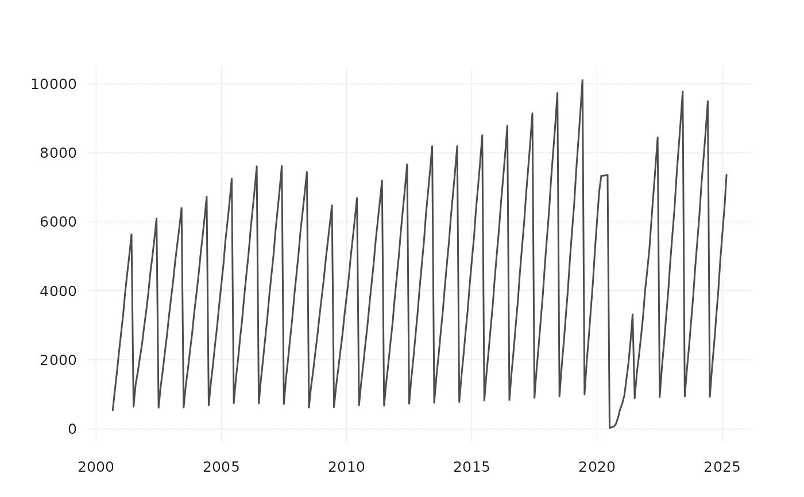

Fiscal year to date sum or average
fytd_agg.RdFiscal year to date sum or average
Details
Works as ytd_agg(), with the fiscal year starting in July. An NA makes the rest of its fiscal year NA.
Examples
monthly_data_example |>
fytd_agg() |>
tail()
#> # A tibble: 6 × 4
#> time VISNS_HI VAPNS_HI VADCNS_HI
#> <date> <dbl> <dbl> <dbl>
#> 1 2024-10-01 807. 957. 220.
#> 2 2024-11-01 800. 939. 219.
#> 3 2024-12-01 818. 953. 227.
#> 4 2025-01-01 814. 946. 229.
#> 5 2025-02-01 808. 930. 230.
#> 6 2025-03-01 818. 937. 232.
quarterly_data_example |>
fytd_agg() |>
tail()
#> # A tibble: 6 × 31
#> time E_NF_HI ECT_HI EMN_HI EWT_HI ERT_HI E_TRADE_HI E_TU_HI ETWTANS_HI
#> <date> <dbl> <dbl> <dbl> <dbl> <dbl> <dbl> <dbl> <dbl>
#> 1 2023-10-01 632. 38.1 12.7 17.3 65.1 82.5 34.2 9.93
#> 2 2024-01-01 634. 38.4 12.7 17.4 65.0 82.3 34.2 9.92
#> 3 2024-04-01 634. 38.6 12.7 17.4 64.9 82.2 34.2 9.89
#> 4 2024-07-01 640. 39.6 12.8 17.3 64.5 81.8 34.8 9.77
#> 5 2024-10-01 641. 39.3 12.9 17.3 64.7 82.0 34.7 9.75
#> 6 2025-01-01 644. 39.4 13.0 17.3 64.8 82.2 34.8 9.72
#> # ℹ 22 more variables: ETWNS_HI <dbl>, EUT_HI <dbl>, EIF_HI <dbl>,
#> # EFI_HI <dbl>, E_FIR_HI <dbl>, ERE_HI <dbl>, EPS_HI <dbl>, E_PBS_HI <dbl>,
#> # E_ELSE_HI <dbl>, EMA_HI <dbl>, EAD_HI <dbl>, EED_HI <dbl>, EHC_HI <dbl>,
#> # EAF_HI <dbl>, EAFAC_HI <dbl>, EAFFD_HI <dbl>, EOS_HI <dbl>, EGV_HI <dbl>,
#> # EGVFD_HI <dbl>, EGVST_HI <dbl>, EGVSTEDNS_HI <dbl>, EGVLC_HI <dbl>
monthly_data_example |>
tsbox::ts_long() |>
tsbox::ts_pick("VISNS_HI") |>
tsbox::ts_xts() |>
fytd_agg(avg = FALSE) |>
tsbox::ts_plot()
